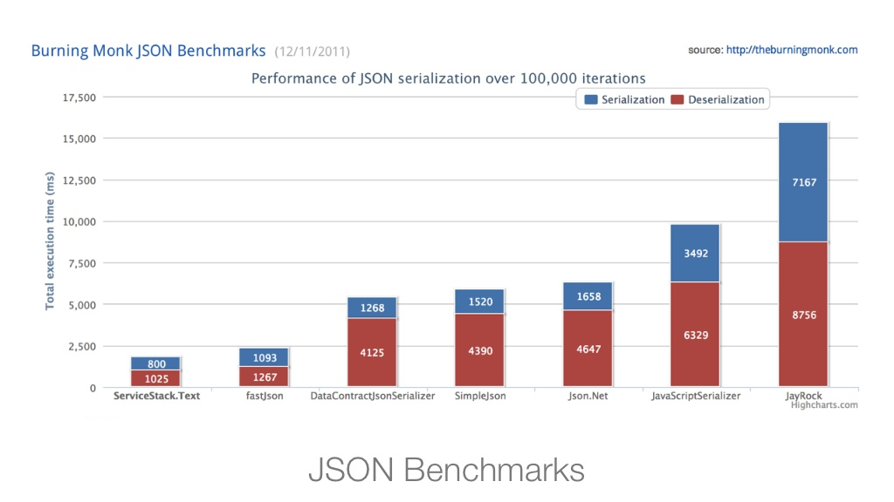

What and Why ?
Dennis Riis
14/12, 2012
"Thoughtfully architected, obscenely fast,
thoroughly enjoyable web services for all."
- Simple
- Fast
- Lightweight
- Testable
- Clean
Simple
- C# Model driven development
- DTOs with no dependencies
-
- DTO in/out: No dependencies on specific formats or endpoints
- Supports JSON, XML, JSV and
SOAP out of the box
- Automatic, code free content negotiation
Fast
- Builds on raw IHttpHandler, no extra fluff
- ServiceStack.Text: Fastest .NET JSON Serializer
-
- Cache support built in (and Redis client, and cache provider for Redis)
- Built-in MiniProfiler
Lightweight
- Code first (code only)
- No configuration hell (I am looking at you, WCF)
- Decoupled, no base class requirements, etc.

Testable
-
Code unit tests without depencies
-
Built in self-hosting, allows to run unit tests as integration tests in any format
-
HTML format, quickly look at the response in the browser.
-
Metadata browser
Clean
- Nice and well thought out framework
- Separates messages from implementation
Personal experiences
-
Easy to learn, easy to get started
-
Easy to get support (StackOverflow is #1 resource)
-
Well maintained, very active
-
Time from pull request to new release: 18 hours.
Code time !
-
Simple demo example first
-
Then real world usage on DBA
Why not MS Web API ?
- Web API is coupled to a controller (forced base class), ServiceStack is not
- Web API is more closely coupled to the http request, ServiceStack is opt-in to access http details
- Web API is R1, ServiceStack around since 2008
- ServiceStack is cleaner, and simpler: less development friction
The two frameworks has similar features, but ServiceStack comes with more "in the box"
Resources
- ServiceStack.NET and GitHub (See the examples)
-
Ask questions on StackOverflow, "official" support channel
-
Follow @demisbellot on Twitter.
Questions?